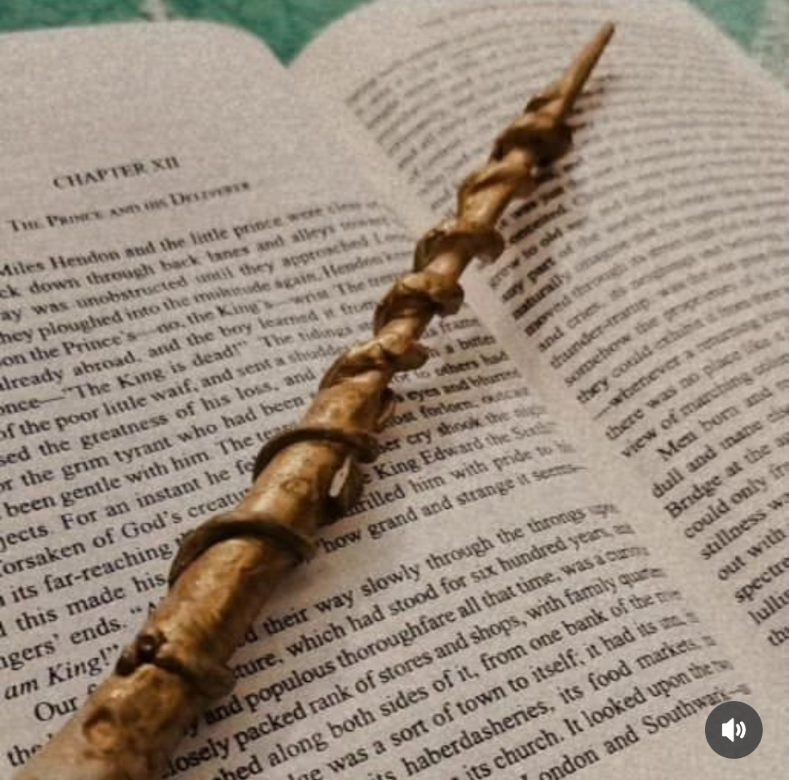

Independent creative project
Handmade Fantasy Wand Project
A small creative experiment in turning an idea into a handmade product.
- Designed and handcrafted two Harry Potter-inspired wands independently.
- Developed original shapes, spiral detailing, textures and colour combinations.
- Photographed the products and wrote Instagram captions.
- Generated interest from 10 people through Instagram.
- Gifted both completed wands; no paid sales.